8. Stomatal Resistance and Photosynthesis¶
Leaf stomatal resistance, which is needed for the water vapor flux
(Chapter 5), is coupled to leaf photosynthesis similar to Collatz et al.
(1991, 1992). These equations are solved separately for sunlit and
shaded leaves using average absorbed photosynthetically active radiation
for sunlit and shaded leaves
[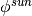 ,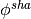 W m-2
(section 4.1)] to give sunlit and shaded stomatal resistance
(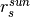 ,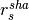 s m-1) and
photosynthesis ( ,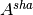 µmol CO2 m-2 s-1). Canopy
photosynthesis is 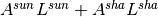 , where
 and
and  are the sunlit and shaded leaf
area indices (section 4.1). Canopy conductance is
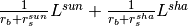 ,
where 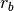 is the leaf boundary layer resistance (section
5.3). The equation set is described by Bonan et al. (2011).
are the sunlit and shaded leaf
area indices (section 4.1). Canopy conductance is
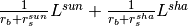 ,
where 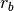 is the leaf boundary layer resistance (section
5.3). The equation set is described by Bonan et al. (2011).
8.1. Stomatal resistance¶
Leaf stomatal resistance is calculated from the Ball-Berry conductance model as described by Collatz et al. (1991) and implemented in global climate models (Sellers et al. 1996). The model relates stomatal conductance (i.e., the inverse of resistance) to net leaf photosynthesis, scaled by the relative humidity at the leaf surface and the CO1 concentration at the leaf surface. Leaf stomatal resistance is
(1)¶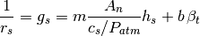
where 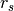 is leaf stomatal resistance (s m2
 mol-1),
mol-1),  is a plant functional
type dependent parameter (Table 8.1), 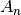 is leaf net
photosynthesis (mol CO2 m-2
s-1), 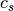 is the CO2 partial
pressure at the leaf surface (Pa),
is a plant functional
type dependent parameter (Table 8.1), 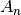 is leaf net
photosynthesis (mol CO2 m-2
s-1), 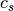 is the CO2 partial
pressure at the leaf surface (Pa),  is the atmospheric
pressure (Pa), 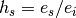 is the leaf surface humidity
with 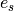 the vapor pressure at the leaf surface (Pa) and
is the atmospheric
pressure (Pa), 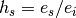 is the leaf surface humidity
with 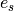 the vapor pressure at the leaf surface (Pa) and
 the saturation vapor pressure (Pa) inside the leaf at the
vegetation temperature
the saturation vapor pressure (Pa) inside the leaf at the
vegetation temperature , and
, and  is the minimum
stomatal conductance ( mol m -2
s-1). Parameter values are for
C3 plants and 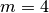 for C4 plants
(Collatz et al. 1991, 1992, Sellers et al. 1996). Sellers et al. (1996)
used 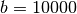 for C3 plants and
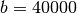 for C4 plants, also used here.
Photosynthesis is calculated for sunlit () and shaded
() leaves to give and
. Additionally, soil water influences stomatal
resistance directly by multiplying the minimum conductance by a soil
water stress function
is the minimum
stomatal conductance ( mol m -2
s-1). Parameter values are for
C3 plants and 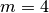 for C4 plants
(Collatz et al. 1991, 1992, Sellers et al. 1996). Sellers et al. (1996)
used 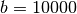 for C3 plants and
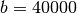 for C4 plants, also used here.
Photosynthesis is calculated for sunlit () and shaded
() leaves to give and
. Additionally, soil water influences stomatal
resistance directly by multiplying the minimum conductance by a soil
water stress function  (which ranges from 0 to 1) and
also indirectly through , as in (Sellers et al. 1996).
(which ranges from 0 to 1) and
also indirectly through , as in (Sellers et al. 1996).
Resistance is converted from units of
s m2 mol-1 to s m-1 as:
1 s msup:-1 = 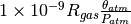
mol-1 m2 s, where 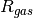 is the universal gas constant (J K-1
kmol-1) (Table 2.6) and  is the
atmospheric potential temperature (K).
is the
atmospheric potential temperature (K).
Table 8.1. Plant functional type (PFT) photosynthetic parameters.
| PFT | m |  |
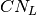 | 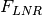 | 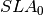 | 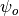 | 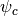 | 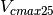 |
|---|---|---|---|---|---|---|---|---|
| NET Temperate | 9 | – | 35 | 0.0509 | 0.010 | -66000 | -255000 | 62.5 |
| NET Boreal | 9 | – | 40 | 0.0466 | 0.008 | -66000 | -255000 | 62.6 |
| NDT Boreal | 9 | – | 25 | 0.0546 | 0.024 | -66000 | -255000 | 39.1 |
| BET Tropical | 9 | – | 30 | 0.0461 | 0.012 | -66000 | -255000 | 55.0 |
| BET temperate | 9 | – | 30 | 0.0515 | 0.012 | -66000 | -255000 | 61.5 |
| BDT tropical | 9 | – | 25 | 0.0716 | 0.030 | -35000 | -224000 | 41.0 |
| BDT temperate | 9 | – | 25 | 0.1007 | 0.030 | -35000 | -224000 | 57.7 |
| BDT boreal | 9 | – | 25 | 0.1007 | 0.030 | -35000 | -224000 | 57.7 |
| BES temperate | 9 | – | 30 | 0.0517 | 0.012 | -83000 | -428000 | 61.7 |
| BDS temperate | 9 | – | 25 | 0.0943 | 0.030 | -83000 | -428000 | 54.0 |
| BDS boreal | 9 | – | 25 | 0.0943 | 0.030 | -83000 | -428000 | 54.0 |
| C3 arctic grass | 9 | – | 25 | 0.1365 | 0.030 | -74000 | -275000 | 78.2 |
| C3 grass | 9 | – | 25 | 0.1365 | 0.030 | -74000 | -275000 | 78.2 |
| C4 grass | 4 | 0.05 | 25 | 0.0900 | 0.030 | -74000 | -275000 | 51.6 |
| Crop R | 9 | – | 25 | 0.1758 | 0.030 | -74000 | -275000 | 100.7 |
| Crop I | 9 | – | 25 | 0.1758 | 0.030 | -74000 | -275000 | 100.7 |
| Corn R | 4 | 0.05 | 25 | 0.2930 | 0.050 | -74000 | -275000 | 100.7 |
| Corn I | 4 | 0.05 | 25 | 0.2930 | 0.050 | -74000 | -275000 | 100.7 |
| Temp Cereal R | 9 | – | 25 | 0.4102 | 0.070 | -74000 | -275000 | 100.7 |
| Temp Cereal I | 9 | – | 25 | 0.4102 | 0.070 | -74000 | -275000 | 100.7 |
| Winter Cereal R | 9 | – | 25 | 0.4102 | 0.070 | -74000 | -275000 | 100.7 |
| Winter Cereal I | 9 | – | 25 | 0.4102 | 0.070 | -74000 | -275000 | 100.7 |
| Soybean R | 9 | – | 25 | 0.4102 | 0.070 | -74000 | -275000 | 100.7 |
| Soybean I | 9 | – | 25 | 0.4102 | 0.070 | -74000 | -275000 | 100.7 |
(mol CO2 mol-1 photon);
(g C g-1 N); (g N Rubisco g-1 N); (m2 g-1 C);
and (mm);
Vcmax25 (mol m-2 s-1, calculated from equation for canopy top).
8.2. Photosynthesis¶
Photosynthesis in C3 plants is based on the model of
Farquhar et al. (1980). Photosynthesis in C4 plants is
based on the model of Collatz et al. (1992). Bonan et al. (2011)
describe the implementation, modified here. In its simplest form, leaf
net photosynthesis after accounting for respiration ( ) is
) is
(2)¶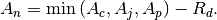
The RuBP carboxylase (Rubisco) limited rate of carboxylation
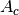 ( mol CO2 m-2
s-1) is
(3)¶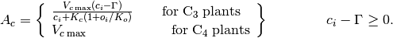
The maximum rate of carboxylation allowed by the capacity to regenerate
RuBP (i.e., the light-limited rate) 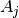 ( mol
CO2 m-2 s-1) is
(4)¶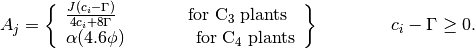
The product-limited rate of carboxylation for C3 plants
and the PEP carboxylase-limited rate of carboxylation for
C4 plants 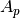 ( mol
CO2 m-2 s-1) is
(5)¶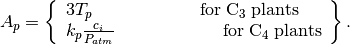
In these equations,  is the internal leaf
CO2 partial pressure (Pa) and 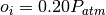
is the O2 partial pressure (Pa). 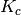 and
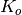 are the Michaelis-Menten constants (Pa) for
CO2 and O2.
is the internal leaf
CO2 partial pressure (Pa) and 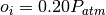
is the O2 partial pressure (Pa). 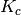 and
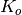 are the Michaelis-Menten constants (Pa) for
CO2 and O2.  (Pa) is
the CO2 compensation point. 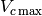 is the
maximum rate of carboxylation (µmol m-2
s-1) and is the electron transport rate (µmol
m-2 s-1).
(Pa) is
the CO2 compensation point. 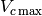 is the
maximum rate of carboxylation (µmol m-2
s-1) and is the electron transport rate (µmol
m-2 s-1).  is the triose
phosphate utilization rate (µmol m-2 s-1),
taken as 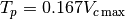 so that
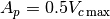 for C3 plants (as in
Collatz et al. 1991). For C4 plants, the light-limited
rate varies with
is the triose
phosphate utilization rate (µmol m-2 s-1),
taken as 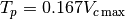 so that
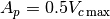 for C3 plants (as in
Collatz et al. 1991). For C4 plants, the light-limited
rate varies with  in relation to the quantum
efficiency (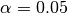 mol CO2
mol-1 photon). is the absorbed
photosynthetically active radiation (W m-2) (section
4.1), which is converted to photosynthetic photon flux assuming 4.6
mol photons per joule. 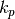 is the initial slope
of C4 CO2 response curve.
in relation to the quantum
efficiency (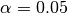 mol CO2
mol-1 photon). is the absorbed
photosynthetically active radiation (W m-2) (section
4.1), which is converted to photosynthetic photon flux assuming 4.6
mol photons per joule. 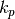 is the initial slope
of C4 CO2 response curve.
For C3 plants, the electron transport rate depends on the photosynthetically active radiation absorbed by the leaf. A common expression is the smaller of the two roots of the equation
(6)¶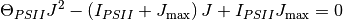
where 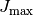 is the maximum potential rate of electron
transport (mol m-2 s-1),
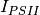 is the light utilized in electron transport by
photosystem II (µmol m-2 s-1), and
is a curvature parameter. For a given amount of
photosynthetically active radiation absorbed by a leaf (W
m-2), converted to photosynthetic photon flux density
with 4.6 mol J-1, the light utilized in
electron transport is
(7)¶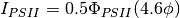
where 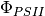 is the quantum yield of photosystem II, and the term 0.5 arises because one photon is absorbed by each of the two photosystems to move one electron. Parameter values are = 0.7 and = 0.85. In calculating (for both C3 and C4 plants), 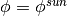 for sunlit leaves and 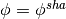 for shaded leaves.
The model uses co-limitation as described by Collatz et al. (1991,
1992). The actual gross photosynthesis rate,  , is given by the
smaller root of the equations
, is given by the
smaller root of the equations
(8)¶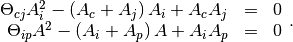
Values are 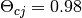 and 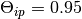 for
C3 plants; and and
for C4 plants.
 .
.
The parameters , , and
depend on temperature. Values at 25 o C are
,
, and
.
, , , ,
and also vary with temperature. Parameter values at 25
 C are calculated from at 25
C: ,
, and
(C3) and
(C4). For
C4 plants, .
However, when the biogeochemistry is active, is
calculated from leaf nitrogen as , where
C are calculated from at 25
C: ,
, and
(C3) and
(C4). For
C4 plants, .
However, when the biogeochemistry is active, is
calculated from leaf nitrogen as , where
 is the area-based leaf nitrogen concentration (g N
m-2 leaf area, equation ) and 0.2577 mol
CO2 g-1 N s-1 the base
respiration rate. The parameters ,
, , , and
are scaled over the canopy for sunlit and shaded leaves
(section 8.3). In C3 plants, these are adjusted for leaf temperature
(K) as:
is the area-based leaf nitrogen concentration (g N
m-2 leaf area, equation ) and 0.2577 mol
CO2 g-1 N s-1 the base
respiration rate. The parameters ,
, , , and
are scaled over the canopy for sunlit and shaded leaves
(section 8.3). In C3 plants, these are adjusted for leaf temperature
(K) as:
(9)¶![\begin{array}{rcl} {V_{c\max } } & {=} & {V_{c\max 25} \; f\left(T_{v} \right)f_{H} \left(T_{v} \right)} \\ {J_{\max } } & {=} & {J_{\max 25} \; f\left(T_{v} \right)f_{H} \left(T_{v} \right)} \\ {T_{p} } & {=} & {T_{p25} \; f\left(T_{v} \right)f_{H} \left(T_{v} \right)} \\ {R_{d} } & {=} & {R_{d25} \; f\left(T_{v} \right)f_{H} \left(T_{v} \right)} \\ {K_{c} } & {=} & {K_{c25} \; f\left(T_{v} \right)} \\ {K_{o} } & {=} & {K_{o25} \; f\left(T_{v} \right)} \\ {\Gamma _{*} } & {=} & {\Gamma _{*25} \; f\left(T_{v} \right)} \end{array}](../../_images/math/b3e45724fc7ecc4472ab6e2135254aa0bcc7dea0.png)
with
(10)¶
and
(11)¶
Table 8.2 list parameter values for ,
, and , from Bonan et al. (2011).
Because as implemented here varies with
, the same temperature parameters are used for
. For C4 plants,
(12)¶
with , K-1 K, K-1, and K. Additionally,
(13)¶
with , K-1 and K, and
(14)¶
with .
Table 8.2. Temperature dependence parameters for C3 photosynthesis.
| Parameter | (J mol-1) | (J mol-1) | (J mol-1 K-1) |
|---|---|---|---|
| 65330 | 149250 | 485 | |
| 43540 | 152040 | 495 | |
|
65330 | 149250 | 485 |
|
46390 | 150650 | 490 |
| 79430 | – | – | |
| 36380 | – | – | |
|
37830 | – | – |
The parameters in Table 8.2 do not allow for temperature acclimation of photosynthesis. In the model, acclimation is implemented as in Kattge and Knorr (2007). In this parameterization, and vary with the plant growth temperature. This is achieved by allowing to vary with growth temperature according to
(15)¶
The effect is to cause the temperature optimum of and to increase with warmer temperature. In this parameterization, = 200000, = 72000 for , and = 50000 for . Additionally, the ratio at 25 oC decreases with growth temperature as
(16)¶
In these acclimation functions, is the 10-day mean air
temperature (K) and  is the freezing point of water (K).
For lack of data, acclimates similar to V cmax . Acclimation is restricted over the temperature
range
is the freezing point of water (K).
For lack of data, acclimates similar to V cmax . Acclimation is restricted over the temperature
range  oC and oC.
oC and oC.
8.3. Vcmax25 and Canopy scaling¶
The maximum rate of carboxylation at 25 oC varies with foliage nitrogen concentration and specific leaf area and is calculated as in Thornton and Zimmermann (2007). At 25ºC,
(17)¶
where is the area-based leaf nitrogen concentration (g N
m-2 leaf area), is the fraction of leaf
nitrogen in Rubisco (g N in Rubisco g-1 N),
is the mass ratio of total Rubisco molecular mass
to nitrogen in Rubisco (g Rubisco g-1 N in Rubisco), and
is the specific activity of Rubisco (µmol
CO2 g-1 Rubisco s-1).
is calculated from mass-based leaf N concentration and
specific leaf area
(18)¶
where is the leaf carbon-to-nitrogen ratio (g C g-1 N) and is specific leaf area at the canopy top ( m2 leaf area g-1 C ). Table 8.1 lists values of , , and for each plant functional type. was chosen to give consistent with Kattge et al. (2009), as discussed by Bonan et al. (2011, 2012). Table 8.1 lists derived values for at the top of the canopy using . Tropical broadleaf evergreen trees are an exception, and a higher is used to alleviate model biases (Bonan et al. 2012).
is calculated separately for sunlit and shaded
leaves using an exponential profile to area-based leaf nitrogen
( ), as in Bonan et al. (2011). at
cumulative leaf area index  from the canopy top scales directly
with , which decreases exponentially with greater
cumulative leaf area, so that
from the canopy top scales directly
with , which decreases exponentially with greater
cumulative leaf area, so that
(19)¶
where is defined at the top of the canopy using , and is the decay coefficient for nitrogen. The canopy integrated value for sunlit and shaded leaves is
(20)¶
(21)¶
and the average value for the sunlit and shaded leaves is
(22)¶
(23)¶
This integration is over all leaf area ( ) with
and
) with
and  the direct beam
extinction coefficient (equation 4.9). Photosynthetic parameters
, , , and
scale similarly.
the direct beam
extinction coefficient (equation 4.9). Photosynthetic parameters
, , , and
scale similarly.
The value chosen by Bonan et al. (2011) is consistent with observationally-derived estimates for forests, mostly tropical, and provides a gradient in Vcmax similar to the original CLM4 specific leaf area scaling. However, Bonan et al. (2012) showed that the sunlit/shaded canopy parameterization does not match an explicit multi-layer canopy parameterization. The discrepancy arises from absorption of scattered radiation by shaded leaves and can be tuned out with higher . The model uses to match an explicit multi-layer canopy.
additionally varies with daylength () using the function , which introduces seasonal variation to
(24)¶
with . Daylength (seconds) is given by
(25)¶
where (latitude) and (declination angle) are
from section 3.3. Maximum daylength ( ) is calculated
similarly but using the maximum declination angle for present-day
orbital geometry ( 23.4667º [0.409571 radians],
positive for Northern Hemisphere latitudes and negative for Southern
Hemisphere).
23.4667º [0.409571 radians],
positive for Northern Hemisphere latitudes and negative for Southern
Hemisphere).
8.4. Soil water stress¶
Soil water influences stomatal conductance directly by multiplying the
minimum conductance by a soil water stress function
and also indirectly through in the C3 and
C4 photosynthesis models, as in Sellers et al. (1996).
The latter effect is achieved by multiplying and
by .
The function ranges from one when the soil is wet to
near zero when the soil is dry and depends on the soil water potential
of each soil layer, the root distribution of the plant functional type,
and a plant-dependent response to soil water stress
(26)¶
where is a plant wilting factor for layer  and
and
 is the fraction of roots in layer . The plant
wilting factor is
is the fraction of roots in layer . The plant
wilting factor is
(27)¶
where  is the soil water matric potential (mm) and
and are the soil water potential
(mm) when stomata are fully closed or fully open (respectively) (Table
8.1). The term in brackets scales by the ratio of the
effective porosity (accounting for the ice fraction;
) relative to the total porosity.
is the soil water matric potential (mm) and
and are the soil water potential
(mm) when stomata are fully closed or fully open (respectively) (Table
8.1). The term in brackets scales by the ratio of the
effective porosity (accounting for the ice fraction;
) relative to the total porosity.
Here, the soil water matric potential is defined as
(28)¶
where is the soil wetness for layer with
respect to the effective porosity and and
 are the saturated soil matric potential (mm) and the
Clapp and Hornberger (1978) parameter (section 7.4.1). The soil wetness
is
are the saturated soil matric potential (mm) and the
Clapp and Hornberger (1978) parameter (section 7.4.1). The soil wetness
is
(29)¶
where
and
.
 and
and  are the ice and liquid
water contents (kg m-2) (Chapter 7),
are the ice and liquid
water contents (kg m-2) (Chapter 7),
 is the saturated volumetric water content
(section 7.4.1), and are the
densities of ice and liquid water (kg m-3) (Table 2.6),
and
is the saturated volumetric water content
(section 7.4.1), and are the
densities of ice and liquid water (kg m-3) (Table 2.6),
and  is the soil layer thickness (m) (section 6.1).
is the soil layer thickness (m) (section 6.1).
The root fraction in each soil layer depends on the plant
functional type
(30)¶
where  (m) is the depth from the soil surface to the
interface between layers and
(m) is the depth from the soil surface to the
interface between layers and  (
( ,
the soil surface) (section 6.1), and and
are plant-dependent root distribution parameters adopted from Zeng
(2001) (Table 8.3).
,
the soil surface) (section 6.1), and and
are plant-dependent root distribution parameters adopted from Zeng
(2001) (Table 8.3).
Table 8.3. Plant functional type root distribution parameters.
| Plant Functional Type | ||
|---|---|---|
| NET Temperate | 7.0 | 2.0 |
| NET Boreal | 7.0 | 2.0 |
| NDT Boreal | 7.0 | 2.0 |
| BET Tropical | 7.0 | 1.0 |
| BET temperate | 7.0 | 1.0 |
| BDT tropical | 6.0 | 2.0 |
| BDT temperate | 6.0 | 2.0 |
| BDT boreal | 6.0 | 2.0 |
| BES temperate | 7.0 | 1.5 |
| BDS temperate | 7.0 | 1.5 |
| BDS boreal | 7.0 | 1.5 |
| C3 grass arctic | 11.0 | 2.0 |
| C3 grass | 11.0 | 2.0 |
| C4 grass | 11.0 | 2.0 |
| Crop R | 6.0 | 3.0 |
| Crop I | 6.0 | 3.0 |
| Corn R | 6.0 | 3.0 |
| Corn I | 6.0 | 3.0 |
| Temp Cereal R | 6.0 | 3.0 |
| Temp Cereal I | 6.0 | 3.0 |
| Winter Cereal R | 6.0 | 3.0 |
| Winter Cereal I | 6.0 | 3.0 |
| Soybean R | 6.0 | 3.0 |
| Soybean I | 6.0 | 3.0 |
8.5. Numerical implementation¶
The CO2 partial pressure at the leaf surface
(Pa) and the vapor pressure at the leaf surface
(Pa), needed for the stomatal resistance model in
equation , and the internal leaf CO2 partial pressure
(Pa), needed for the photosynthesis model in equations -,
are calculated assuming there is negligible capacity to store
CO2 and water vapor at the leaf surface so that
(31)¶
and the transpiration fluxes are related as
(32)¶
where is leaf boundary layer resistance (s
m2 mol-1) (section 5.3), the
terms 1.4 and 1.6 are the ratios of diffusivity of CO2 to
H2O for the leaf boundary layer resistance and stomatal
resistance,
is the atmospheric CO2 partial pressure (Pa) calculated
from CO2 concentration (ppmv), is the
saturation vapor pressure (Pa) evaluated at the leaf temperature
, and is the vapor pressure of air (Pa).
The vapor pressure of air in the plant canopy (Pa) is
determined from
(33)¶
where is the specific humidity of canopy air (kg kg-1) (section 5.3). Equations and are solved for and
(34)¶
(35)¶
Substitution of equation into equation gives an expression for stomatal resistance ( ) as a function of photosynthesis ( ), given here in terms of conductance with and
(36)¶
Stomatal conductance is the larger of the two roots that satisfy the
quadratic equation. Values for are given by
(37)¶
The equations for , , , and
are solved iteratively until converges.
Sun et al. (2012) pointed out that the CLM4 numerical approach does not
always converge. Therefore, the model uses a hybrid algorithm that
combines the secant method and Brent’s method to solve for
. The equation set is solved separately for sunlit
( , ) and shaded
( , ) leaves.
The model has an optional (though not supported) multi-layer canopy, as described by Bonan et al. (2012). The multi-layer model is only intended to address the non-linearity of light profiles, photosynthesis, and stomatal conductance in the plant canopy. In the multi-layer canopy, sunlit ( , ) and shaded ( , ) leaves are explicitly resolved at depths in the canopy using a light profile (Chapter 4). In this case, is not integrated over the canopy, but is instead given explicitly for each canopy layer using equation . This also uses the Lloyd et al. (2010) relationship whereby Kn scales with Vcmax as
(38)¶
such that higher values of Vcmax imply steeper declines in photosynthetic capacity through the canopy with respect to cumulative leaf area.